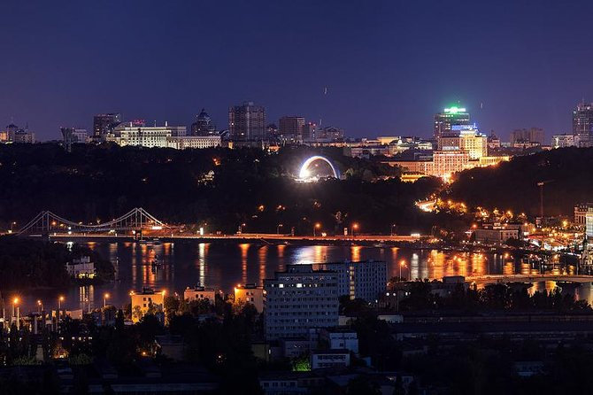
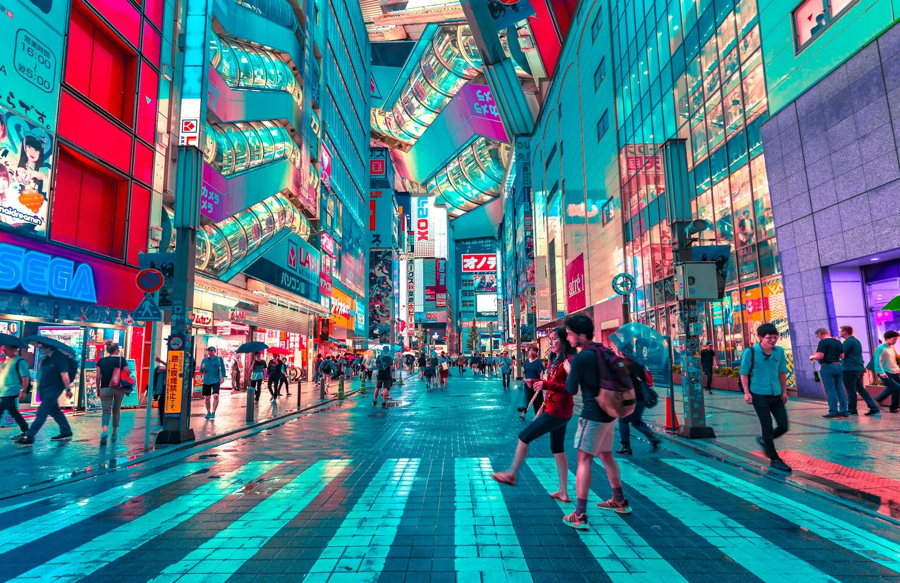
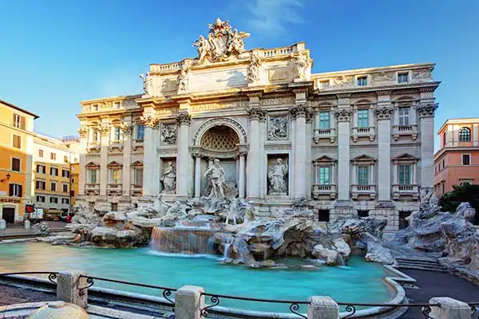
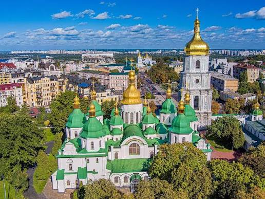
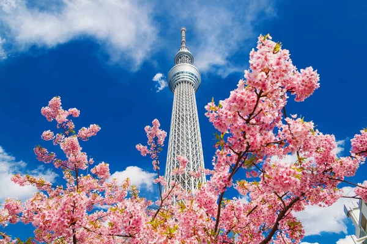

Фотощоденник пригод
Натисніть на фотографію або прочитайте короткі історії з місць, де ми зафільмували ці спогади.
-

Вечірній Київ: чарівна панорама мостів та лівобережжя під час заходу сонця. -

Нічне Токіо: атмосфера району Шібуя, де місто ніколи не спить. -

Фонтан Треві у Римі: ми традиційно кинули монетку, щоб обов'язково повернутися. -

Золоті бані Софії Київської у сонячний літній день. -

Вид на вежу Скайтрі з даху сусіднього оглядового майданчика. -

Величний Колізей під час ранкової екскурсії без натовпу туристів.